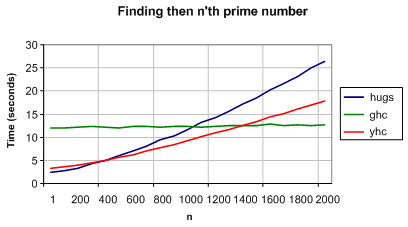

Yhc is a Haskell 98 Compiler. Based on nhc98, but with an entirely rewritten backend, it takes lots of good features from nhc98, and adds lots of new ones.
Blog: Announcements from the Yhc team.
Mailing List: General discussions, developer and user orientated.
Wiki: Documentation you can edit yourself.
Documentation: Descriptions of all the modules, from the source code.
Test Suite: A report on the regression test suite.
Warning:
This project is by no means finished, and is not useable as a standard Haskell compiler yet.
This project is run by 3 York [ex-]students, and is not an official York Uni project.
The current development version is available online. Please note that yhc is still not finished, so don't expect a full polished compiler yet!
There are two versions, the stable one and the development one. If you want to contribute to Yhc, we recommend the development one.
darcs get http://www.cs.york.ac.uk/fp/darcs/yhc
darcs get http://www.cs.york.ac.uk/fp/darcs/yhc-devel
The compiler, runtime and libraries are all licensed under the GPL version 2.0. Any code compiled with yhc does not become GPL'd by virtue of being compiled with it, but retains its original license. Programs that use the standard libraries unmodified do not become GPL'd because of this. There is no warranty for yhc.
In order to understand where many of the advantages come from, its necessary to look at how the compiler is constructed. The yhc package is three separate elements.
A Haskell Compiler, written in Haskell, and producing Haskell Bytecode files.
A Haskell Bytecode Format, a specification for cross platform, architecture independent bytecode files.
A runtime, written in highly portable ANSI C, which runs the bytecode files. This runs on Linux and Windows, 32bit and 64bit, and should port to any platform very quickly.
Speed is a funny thing, people always want faster Haskell compilers. But what does faster mean? yhc is not as fast as ghc, but its certainly faster than Hugs. However, it is quicker at compilation than ghc, but not as fast a Hugs. yhc can be seen as a good middle ground, and it always helps to compile your Haskell program with more than one compiler to keep to portable Haskell.

This graph shows the time to compile and run a program that finds the n'th prime number (run 10 times), using a sieve. The lowest line at any point is the best. As you can see, for small values of n, Hugs is best - then yhc, then ghc. Of course, that isn't the end story - the yhc team is working on improvements to the speed of the compiler, new benchmarks will be back soon.
This is a massive advantage of yhc. Compile your Haskell program on your platform, post a single bytecode package on the web and anyone can run it. They don't need a Haskell Compiler installed, they just need the simple and small runtime system - which you can even distribute with your application.
The other advantage of having a bytecode is that the packages are small. Hello World fits into 130 bytes!
The yhc team consists of Tom Shackell, plus various cheerleaders, but he's the only one who does the code. A lot of the code comes from nhc98, so the nhc98 team also deserves some credit.